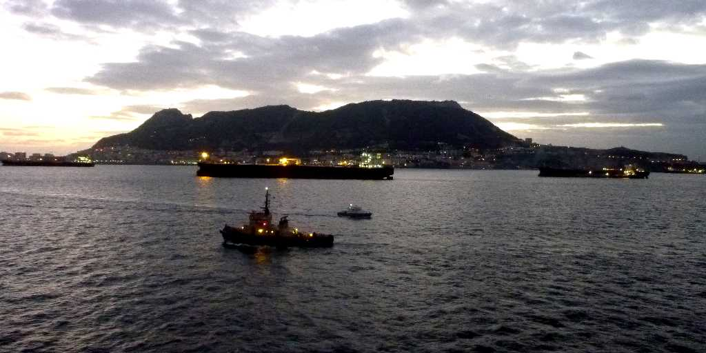
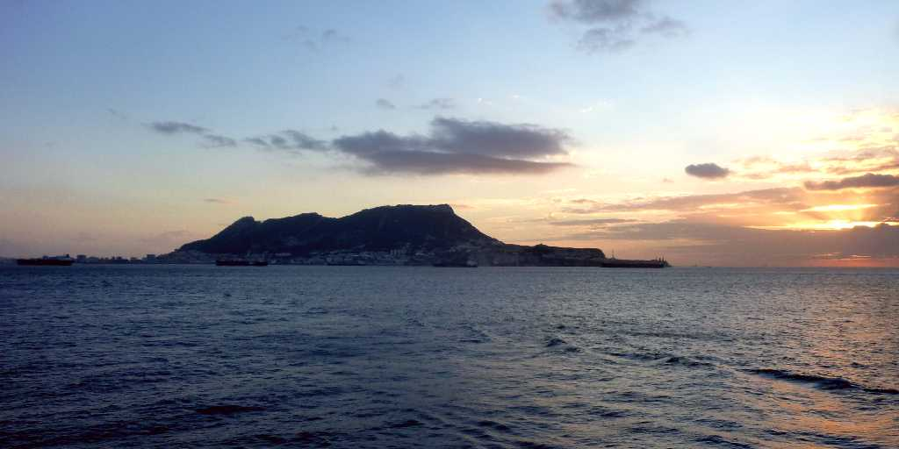
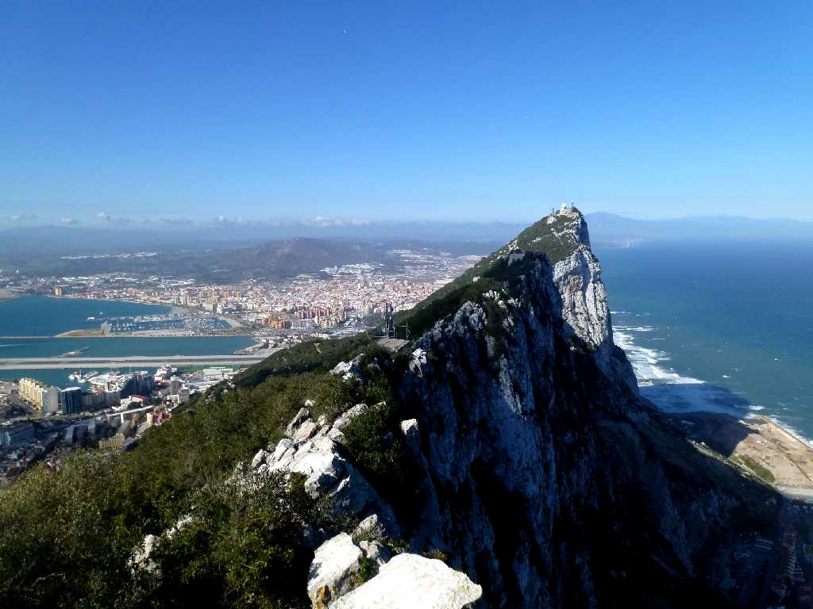
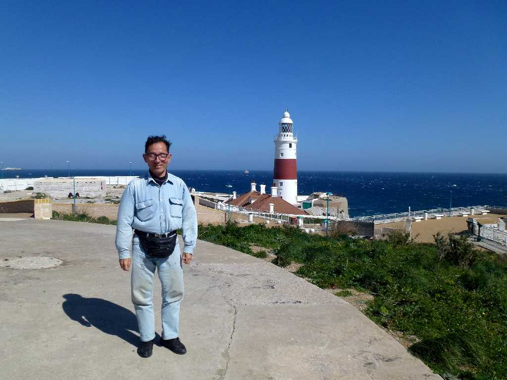

Strait of Gibraltar
地中海の出入口ジブラルタル

September 8 2010 6:11 Sunrise Gibraltar
ジブラルタル海峡を通過すると初めての大西洋横断航行に入る 日本からの海外旅行は世界一周をしないとなかなか大西洋を横断する機会に恵まれない
September 8 2010 SS Oceanic through Strait of Gibraltar

The Rock of Gibraltar
世界一周クルーズ以来４年ぶりにジブラルタルを再訪問 ヘラクレスがヨーロッパとアフリカを分けたジブラルタル海峡にある二つのヘラクレスの柱の一つジブラルタルの岩

March 7 2014 Lighthouse Europe Point Gibraltar
これからジブラルタル海峡を渡りアフリカ大陸のセウタを経由しモロッコ周遊３,０００ｋｍバスの旅に向かう